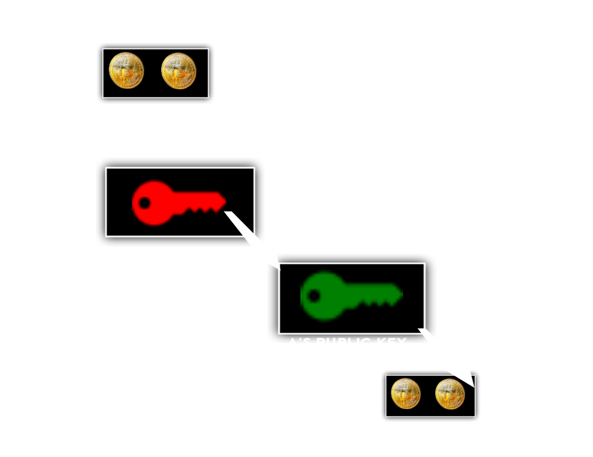

Let us understand the transaction procedure in Blockchain technology by considering scenario that person A wants to send 50ether to person B...
The transaction procedures in Ethereum and Bitcoin have some similarities, but there are also notable differences. Following gives you idea about both crypto currency.
Transaction Structure:
Ethereum: In Ethereum, a transaction contains a sender's address, recipient's address, Ether (ETH) value, and optional data payload.
Bitcoin: In Bitcoin, a transaction consists of inputs (unspent transaction outputs, or UTXOs) and outputs (newly created UTXOs).
Transaction Verification:
Ethereum: Transactions in Ethereum can trigger smart contract functions, and the execution of these functions is verified by the Ethereum Virtual Machine (EVM).
Bitcoin: Bitcoin's transaction verification is based on a consensus algorithm called Proof-of-Work (PoW).
Gas and Transaction Fees:
Ethereum: In Ethereum, transactions require the use of "gas," which represents the computational power needed to execute a transaction or a smart contract function.
Bitcoin: Bitcoin transaction fees are generally based on the transaction size in bytes and the priority level (fee rate) set by the sender.
Block Confirmation Time:
Ethereum: Ethereum aims to have an average block confirmation time of around 15 seconds.
In Bitcoin has a target block confirmation time of approximately 10 minutes.
Transaction Procedure
Firstly, person A wants to create a digital account on the Ethereum network and chooses a trusted wallet provider. Upon creating an account, A is given a private key that is safeguarded by a passphrase or password chosen by A. The private key undergoes an ECC (Elliptic Curve Cryptography) algorithm, resulting in the generation of a unique public key. This private-public key pair allows for secure transactions. Additionally, an account address is created by hashing the public key, further enhancing security and privacy.
Secondly, person A initiates a transaction by specifying the amount he wanted to transfer and providing the public key associated with person B's Ethereum wallet. This transaction request includes the necessary information to identify the recipient and the desired transfer amount. You may have confusion that only cryptocurrency can be transferred through network?!, actually not like that, While Ethereum and Bitcoin are primarily designed for transferring value, it is possible to send data through these blockchain networks as well. However, it's important to note that the storage capacity and efficiency for data transmission on these networks are limited compared to their primary use cases.
Next, the authenticity (state of being genuine, original, or true) and integrity of the transaction are ensured through a process called "Digital Signature." It would be easily explained by considering the following image.

A's private key is used to encrypt the transaction, creating a unique digital signature. This signature serves as a cryptographic proof that the transaction originated from A and has not been tampered with during transmission. The encrypted transaction, along with the digital signature, is then verified using B's public key. This verification process confirms that the transaction can only be decrypted and accessed by B, ensuring the security and privacy of the cryptocurrency being transferred.
After user A digitally signs the cryptocurrency transaction, the transaction is broadcasted to the network and sent to miners. Miners play a crucial role in the validation process of the transaction.

1. Validation
Miner validate the transactions included in a proposed block to ensure they adhere to the network's rules and protocols. He also validate Digital signature by decrypting cryptocurrency using A's public key (NOT POSSIBLE TO ACCESS CURRENCY, they only authenticate, since it is again encrypted by B's public key, only if B's private key know we can access the crypto currency). If miner unable to decrypt using A's public key , he rejects the transaction and it broadcast to user A, it shows that A is not a authenticate person for this transaction.
2. Block creation || Hashing
Miners compete to solve a complex mathematical problem associated with the block they are working on. This problem requires significant computational power, and the first miner to find the solution creates a new block. In PoW-based blockchains like Bitcoin, miners must repeatedly calculate hashes with different inputs until they find a hash that meets certain criteria (e.g., below a specific target value) which given by network protocol.
3. Block Propagation || Broadcasting
Block propagation refers to the process of transmitting a newly mined block to other nodes in a blockchain network. After a miner successfully mines a new block, it needs to be broadcasted across the network and it can't be altered in future.
4. Reward Assignment
While transferring cryptocurrency, person 'A' includes transaction fees that are received by miners. Additionally, miners are rewarded with a block subsidy, which is a predetermined amount set by the Ethereum or Bitcoin network. The block subsidy varies every four years and undergoes a halving process. For example, in the case of Bitcoin, the block subsidy started at 50 BTC and is halved approximately once every four years or every 210,000 blocks. Bitcoin's block subsidy reduced to 25 BTC in 2012, 12.5 BTC in 2016, and 6.25 BTC in 2020.
Receiver:
Once the transaction is confirmed and added to the blockchain, person B's Ethereum wallet balance is updated with the received amount of cryptocurrency. Person B can access the funds in their wallet and manage them as desired. They can hold the cryptocurrency, transfer it to other wallets, exchange it for other tokens, or perform various operations based on the capabilities of their wallet software. It's important to note that the time it takes for a transaction to be confirmed and the funds to be available in person B's wallet can vary depending on network congestion and the gas fees included in the transaction. Higher gas fees can prioritize transaction processing and result in faster confirmation times. Person B can view their transaction history and balance in their Ethereum wallet interface, which allows them to monitor the received funds and manage their cryptocurrency holdings securely.